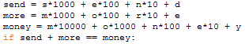
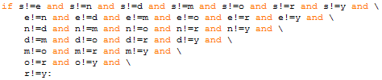
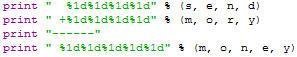
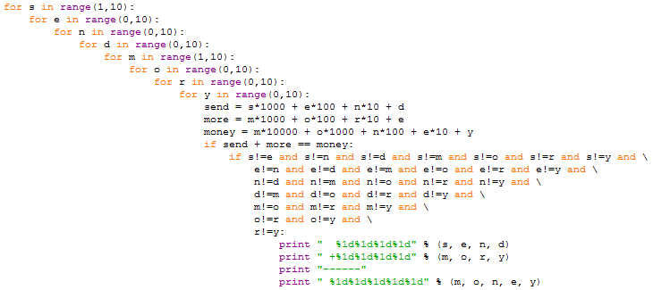

Cryptarithms
Long before sudoku newspapers featured various mental puzzles, one type of which were known as cryptarithms. Cryptarithms are arithmetic puzzles in which some 'words' are added together to get a sum,
send + more -------- money
Each letter stands for a distinct digit, i.e. no two letters stand for the same digit, and the numbers are well-formed, e.g. they do not begin with zero.
How can we use the computer to help us in solving cryptarithms? So far our approach to programming has been to do the problem by hand, and to watch ourselves carefully as we do so. Our goal in doing the problem by hand has been to identify the algorithm we are using, so we can translate it into Python and have the computer do it for us. The assumption has been that the computer will do it in the same way we have.
Cryptarithms are an exception to that approach, because solving a cryptarithm by hand relies on the unique features of the particular cryptarithm we are given. For example in the cryptarithm above we know that m must represent the digit 1. (Why? Because s and m no matter how large cannot add to more than 17, 18 with a carry from the previous addition, and since m cannot be 0, it must be 1.)
But there is no easy way to translate the procedures we carry out in doing cryptarithms by hand into general computational procedures. Instead, we will rely on the particular strengths of computers to have the computer solve the problem in a way we would not do it ourselves.
Unlike humans, computers have the ability to do monotonous calculations rapidly and accurately. This suggests using the computer to solve the cryptarithm by trial and error. We will have the computer find the solution by checking all possible solutions until it finds one that works. The only trick is to come up with a procedure that guarantees we will not miss any possible solutions.
The key is to use nested loops to iterate through all possible values of the letters, i.e. s, e, n, d, m, o , r, and y. The loops to do so look like this:

Note that the loops for s and m begin at 1 because these letters cannot take the value 0 (due to the well-formedness criterion above).
Inside all these loops we place statements to 'build' the values of send, more and money, and test to see if send+more=money,

(Note the use of == here where in paragraph form we have written send+more=money, and always remember, "Assignment is not equality".)
If the test-expression is true we are still not quite done. We must check
that no two letters represent the same digit. That requires a second, even
longer, if,

(Note the triangular shape of the comparisons. It results because having compared s to e in the first line of comparisons, we do not have to compare e to s in the second line, and so on.
If this if also succeeds, then we know we have a solution and should
display it,

Putting it all together we get:

Assuming I have not made any typos this code works, but it is slooooow! How slow? Try it and see. How many solutions to this cryptarithm are there? Some cryptarithms have no solutions, some have 1, but many have several.
Now about that slowness issue. The core problem is that the statements inside the innermost loop are each executed ~200,000,000 times each (that's two hundred million!). We calculate that amount by multiplying the numbers of times the loops outside it go around: 10 times for s by 11 times for e by 11 times for n and so on, or 10x11x11x11x10x11x11x11 = 177,156,100. To speed up the program we need to move statements outward from the center of the program where possible so they will be executed fewer times.
For example we don't need to wait until we are in the centre of the loops
to check that s and e have different values. We could place an if test to do
that right after the for loop generating values of e. Each time we detect a
duplicate and skip the interior loops we save 1.6 million iterations. In fact
most of the if tests can be distributed outwards.
Similarly we don't have to wait until we are in the center to check the sum of send and more. We could check partial sums before we get to the middle, e.g. we could check that y = d + e early on if we rearranged the order of the loops and avoid many more iterations.
For the ultimate speedup we could be less brutish and instead of trying ALL possible combinations we could generate some values and then calculate others. For example if you know that d = 5 and e = 2 then you know that y has to be 7. Note that this gets a little tricky when d+e is greater than 10 because you have a carry digit to worry about.
Combining all these tricks can make a large cryptarithm program run millions of times faster.